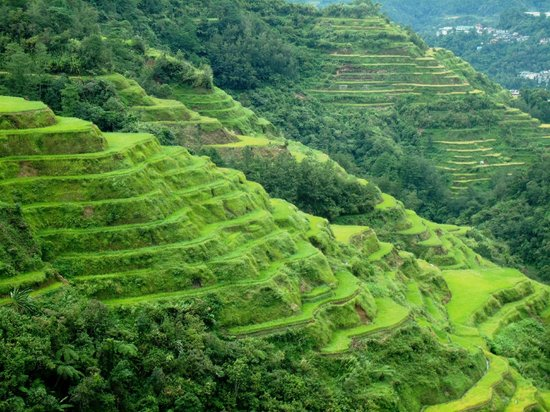
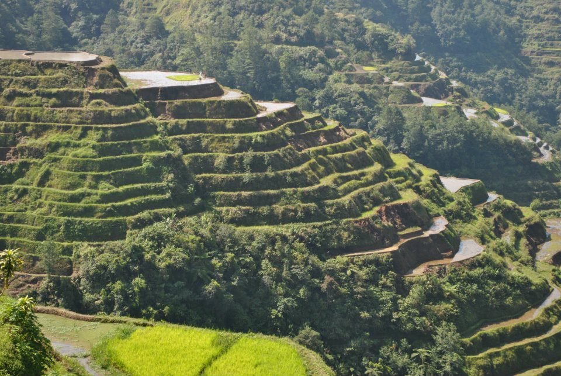
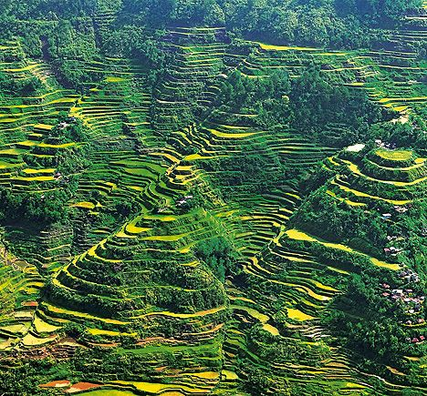
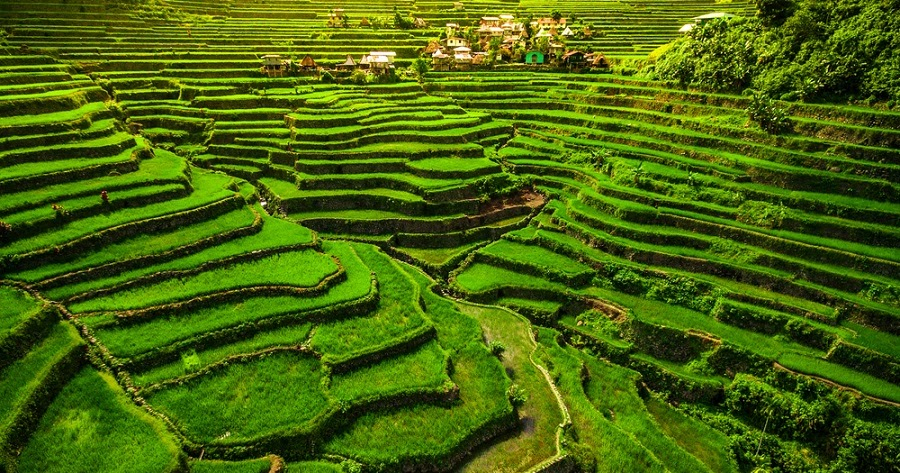

| Home | Boracay | Siargao | Puerto Princesa | Sagada | Banaue | Palawan |
|---|
|  |  |
|  |  |
Is Banaue open for tourism?
No. The Local Government Unit of Banaue has temporarily suspended tourism in the municipality starting January 11, 2022.
The best months to visit Banaue are during the months of April to May and October to November since these are the times when the rice terraces are at their greenest and most scenic state.
Visiting during the rainy seasons of July and August is not recommended due to the possibility of landslides in some areas making it difficult for activities like hiking and trekking.
Traveling to Banaue is a long journey and may be a bit difficult due to the road conditions especially as you approach the mountainous regions.
But as they say, the journey is indeed worth it once you see the postcard-perfect view of the Banaue Rice Terraces. There are a number of routes that you can take when going to Banaue:
By Bus From Manila
It takes about 9 hours (depending on traffic) to get from Manila to Banaue and the only way to get there is via land transportation. There are no direct plane flights available to the province of Ifugao. Most people choose to travel by bus during nighttime so that you can arrive early in Banaue the next day and have more time to explore it.
The Ohayami Bus Transit which can be found in the corner of Fajardo Street and Lacson Avenue in Sampaloc Manilla operates from 9PM daily. If you want to reserve seats in advance, they accept booking online through their website.
Another option is Dangwa Transit which has their terminal in Cubao. Be sure to arrive at the station early if you plan to go by Dangwa bus since they operate only one trip daily and accommodates passengers on a first come, first serve basis. Their earliest schedule leaves at around 8PM.
By Bus From Baguio
The bus from Baguio to Banaue takes approximately 3 hours including transfers and departs at least three times a day. You can go by Ohayami Bus transit stationed along Otek Street near Burnham Park or KMS bus that offers two trips daily and can be found near Rizal Park.